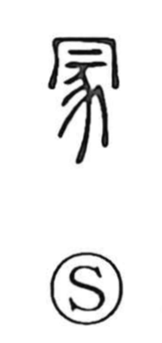

塚

Uncategorized
Kun: tsuka | On: cho
mound ・ tumulus ・ grave
Explanation
A phono-semantic graph: the soil radical 土 gives the sense of earth, while 冢 (on reading cho) supplies the sound. The ancient form 冢 depicts a castrated dog slain as a sacrificial offering and interred with a mound heaped above; this original graph carried the meanings “mound, hillock” and “grave.” The later form 塚, current since the Tang, is the popular written shape. In ritual usage, 冢 could also denote a shrine or grand shrine, and by extension the eldest son as heir to the ancestral charge. The same ritual image explains 家: placing the sacrificed dog beneath the roof that marks the ancestral hall yields the character for “house.”